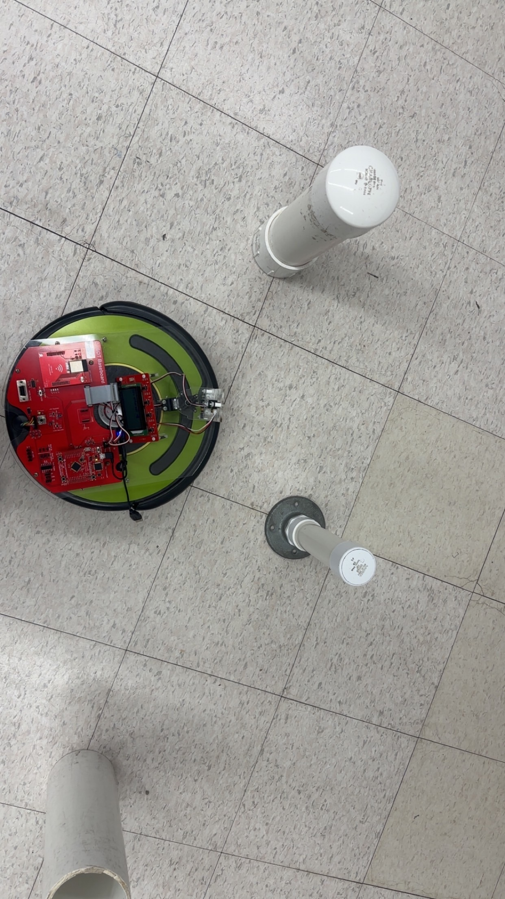

Projects
Projects
A few things I have built or worked on in class and on my own.
HTML, CSS, JavaScript
Maze Solver Visualizer
I built this to practice JavaScript and algorithms in a more visual way. You can edit the grid, place walls, move the start and end points, and watch the search run.
- Made a 16x24 grid that can be edited in the browser.
- Used click events to place walls and move the start and end cells.
- Used Breadth-First Search to find the shortest path.
- Showed basic stats like visited cells and path length.
C, robotics, team project
Autonomous Tree Cutter
This was a team robotics project for CPRE 288. The main challenge was writing and testing C control logic, then seeing whether the robot actually behaved the way we expected.
- Worked on control logic in C.
- Tested the robot with teammates and adjusted behavior based on results.
- Debugged movement issues when the robot did not respond as planned.
- Learned how different hardware debugging feels compared with normal code debugging.
